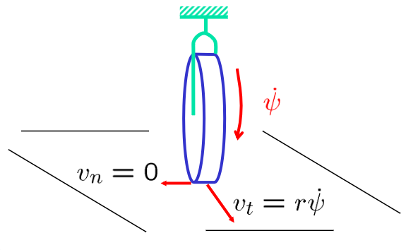
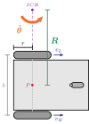
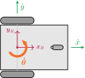

Robótica
Clase 10
Semana 11 - 26/05/2025
Cinemática
Def.: Rama de la mecánica que describe el de los objetos sólidos sin considerar las causas que lo originan. Estudio de la trayectoria en función del tiempo 1
- Utiliza velocidades y aceleraciones
- Diferencia con Dinámica (estudio de fuerzas y sus efectos)
- Modelos más simples
Se utilizará la notación de Newton para las derivadas
Velocidad \(\boldsymbol{\upsilon}\) (primera derivada) y aceleración \(\boldsymbol{a}\) (segunda derivada):
\[ \boldsymbol{\upsilon} = \frac{d\boldsymbol{x}}{dt} = \boldsymbol{\dot{x}} \qquad\qquad \boldsymbol{a} = \frac{d^2\boldsymbol{x}}{dt^2} = \boldsymbol{\ddot{x}} \]
Modelo cinemático
- Los modelos cinemáticos lidian con la relación entre el movimiento de las ruedas y las restricciones de movimiento de la plataforma
| Cinemática directa | Cinemática inversa |
|---|---|
| Dado un conjunto de velocidades de las ruedas (y la geometría del robot), determinar la velocidad del robot. | Dada la velocidad del robot (y la geometría), determinar el conjunto de velocidades de las ruedas. |
| Aplicación: Posicionamiento | Aplicación: Control |
Grados de libertad
| Sistemas holonómicos | Sistemas no-holonómicos |
|---|---|
| El sistema puede moverse instantáneamente en cualquier dirección según sus grados de libertad | El sistema no puede moverse instantáneamente en cualquier dirección |
| Silla de oficina con rueditas | Auto de calle |
Locomoción
Def.: mecanismos que permiten al robot moverse libremente dentro de su entorno 1
- Se diferencia con Manipulación donde el robot está fijo y se mueven los objetos
- Para robótica móvil el uso de ruedas es eficiente en terrenos planos y firmes


Tipos de ruedas
- 3 ruedas son suficientes para garantizar estabilidad. Más de 3 requieren un sistema de suspención adecuado
- La selección depende de la aplicación
Configuraciones de robots con ruedas
Robot diferencial
Principio: controlar la dirección del movimiento variando las velocidades de la rueda izq. (\(v_L\)) y derecha por separado (\(v_R\))
Suposiciones para el modelo
- El movimiento es en una superficie horizontal.
- El contacto de las ruedas con la superficie es un punto.
- Las ruedas no son deformables.
- Las ruedas se encuentran conectadas por una estructura rígida.
Suposiciones para el modelo
- El movimiento a lo largo del eje Y se conoce como rodaje (roll), cualquier otro movimiento se conoce como deslizamiento.
- Se asume que el movimiento es de rodaje puro.
- Se asume que no existe deslizamiento de ningún tipo (sliding, skidding, slipping).

Suposiciones para el modelo
- No existe fricción para una rotación alrededor del punto de contacto.
- Los ejes de rotación son ortogonales a la superficie.
- Para una vuelta completa de una rueda de radio \(r\), el centro se desplaza \(2 \pi \, r\).
ICR (Instantaneous Center of Rotation)
- Para un robot con múltiples ruedas, existe un punto en común de rotación denominado ICR
- La velocidad de cada rueda debe ser consistente con la rotación de la estructura rígida de modo que no exista movimiento relativo entre ellas
Suposiciones para el modelo de un r.d.
- Par de ruedas montadas a lo largo de un eje y una tercera de apoyo (no activa)
- El ICR se ubica a lo largo de este eje

Velocidad angular y velocidad lineal
- Una rueda ubicada a \(\require{color} \textcolor{ForestGreen}{\mathcal{R}}\) unidades del ICR, rota alrededor del ICR a lo largo de un círculo de radio \(\textcolor{ForestGreen}{\mathcal{R}}\)
- La velocidad lineal \(\textcolor{Blue}{\upsilon}\) de una rueda puede definirse como \(\textcolor{Blue}{\upsilon} = \tfrac{2 \pi \textcolor{ForestGreen}{\mathcal{R}}}{T}\) donde \(T\) es el tiempo que tarda en completar una vuelta.
- La velocidad angular \(\textcolor{Orange}{\dot\theta}\) se define como \(\textcolor{Orange}{\dot\theta} = \tfrac{2 \pi}{T}\) y tiene unidades de rad/s.
- Combinando estas dos ecuaciones, se obtiene la relación entre velocidad lineal y angular para un movimiento circular: \[ \textcolor{Blue}{\upsilon} = \textcolor{Orange}{\dot\theta} \textcolor{ForestGreen}{\mathcal{R}} \qquad(1)\]
Deducción del modelo de un r.d.
- Dado el punto medio entre las ruedas \(\textcolor{Maroon}{P}\) a una distancia \(\textcolor{ForestGreen}{R}\) del ICR, la distancia de la rueda izquierda y la derecha al ICR es:
\[ \begin{cases} \mathcal{R}_L = \textcolor{ForestGreen}{R} - \tfrac{\textcolor{Gray}{b}}{2}\\ \mathcal{R}_R = \textcolor{ForestGreen}{R} + \tfrac{\textcolor{Gray}{b}}{2} \end{cases} \]
- Reemplazando en 1 (\(\textcolor{Blue}{\upsilon} = \textcolor{Orange}{\dot\theta} \mathcal{R}\)), las velocidades lineales quedan definidas como: \[ \begin{cases} \textcolor{Blue}{\upsilon_L} = \textcolor{Orange}{\dot\theta} (\textcolor{ForestGreen}{{R}} - \tfrac{\textcolor{Gray}{b}}{2})\\ \textcolor{Blue}{\upsilon_R} = \textcolor{Orange}{\dot\theta} (\textcolor{ForestGreen}{{R}} + \tfrac{\textcolor{Gray}{b}}{2}) \end{cases} \qquad(2)\]
Velocidad angular de un robot diferencial
\[ \begin{cases} \textcolor{Blue}{\upsilon_R} = \textcolor{Orange}{\dot\theta} (\textcolor{ForestGreen}{{R}} + \tfrac{\textcolor{Gray}{b}}{2})\\ \textcolor{Blue}{\upsilon_L} = \textcolor{Orange}{\dot\theta} (\textcolor{ForestGreen}{{R}} - \tfrac{\textcolor{Gray}{b}}{2}) \end{cases} \]
- Restando ambas ecuaciones y resolviendo para \(\textcolor{Orange}{\dot\theta}\)
\[ \require{cancel} \begin{align*} \textcolor{Orange}{\dot\theta} (\textcolor{ForestGreen}{{R}} + \tfrac{\textcolor{Gray}{b}}{2}) - \textcolor{Orange}{\dot\theta} (\textcolor{ForestGreen}{{R}} - \tfrac{\textcolor{Gray}{b}}{2}) &= \textcolor{Blue}{\upsilon_R} - \textcolor{Blue}{\upsilon_L} \\ \textcolor{Orange}{\dot\theta} (\cancel{\textcolor{ForestGreen}{{R}}} + \tfrac{\textcolor{Gray}{b}}{2} - \cancel{\textcolor{ForestGreen}{{R}}} + \tfrac{\textcolor{Gray}{b}}{2}) &= \textcolor{Blue}{\upsilon_R} - \textcolor{Blue}{\upsilon_L} \\ \textcolor{Orange}{\dot\theta} \textcolor{Gray}{b} &= \textcolor{Blue}{\upsilon_R} - \textcolor{Blue}{\upsilon_L} \to \textcolor{Orange}{\dot\theta} = (\textcolor{Blue}{\upsilon_R} - \textcolor{Blue}{\upsilon_L}) / {\textcolor{Gray}{b}}\\ \end{align*} \]
- Expresión de \(\textcolor{Orange}{\dot\theta}\) en función de las velocidades de las ruedas y la geometría:
\[ \textcolor{Orange}{\dot\theta} = \frac{\textcolor{Blue}{\upsilon_R} - \textcolor{Blue}{\upsilon_L}}{\textcolor{Gray}{b}} \qquad(3)\]
Radio de giro de un robot diferencial
\[ \begin{cases} \textcolor{Blue}{\upsilon_R} = \textcolor{Orange}{\dot\theta} (\textcolor{ForestGreen}{{R}} + \tfrac{\textcolor{Gray}{b}}{2})\\ \textcolor{Blue}{\upsilon_L} = \textcolor{Orange}{\dot\theta} (\textcolor{ForestGreen}{{R}} - \tfrac{\textcolor{Gray}{b}}{2}) \end{cases} \]
- Sumando ambas ecuaciones y resolviendo para \(\textcolor{ForestGreen}{{R}}\):
\[ \begin{align*} \textcolor{Orange}{\dot\theta} (\textcolor{ForestGreen}{{R}} + \tfrac{\textcolor{Gray}{b}}{2}) + \textcolor{Orange}{\dot\theta} (\textcolor{ForestGreen}{{R}} - \tfrac{\textcolor{Gray}{b}}{2}) &= \textcolor{Blue}{\upsilon_R} + \textcolor{Blue}{\upsilon_L}\\ \textcolor{Orange}{\dot\theta} (\textcolor{ForestGreen}{{R}} + \cancel{\tfrac{\textcolor{Gray}{b}}{2}} + \textcolor{ForestGreen}{{R}} - \cancel{\tfrac{\textcolor{Gray}{b}}{2}}) &= \textcolor{Blue}{\upsilon_R} + \textcolor{Blue}{\upsilon_L} \\ 2 \textcolor{ForestGreen}{{R}} \, \textcolor{Orange}{\dot\theta} &= \textcolor{Blue}{\upsilon_R} + \textcolor{Blue}{\upsilon_L} \to \textcolor{ForestGreen}{{R}} = (\textcolor{Blue}{\upsilon_R} + \textcolor{Blue}{\upsilon_L}) / {2 \textcolor{Orange}{\dot\theta}} \\ %R &= \frac{\upsilon_R + \upsilon_L}{2 \dot\omega} \end{align*} \]
- Reemplazando con 3, expresión de \(\textcolor{ForestGreen}{{R}}\) en función de las velocidades de las ruedas y la geometría: \[ \textcolor{ForestGreen}{{R}} = \frac{\textcolor{Blue}{\upsilon_R} + \textcolor{Blue}{\upsilon_L}}{2 \frac{\textcolor{Blue}{\upsilon_R} - \textcolor{Blue}{\upsilon_L}}{\textcolor{Gray}{b}}} \to \textcolor{ForestGreen}{{R}} = \frac{\textcolor{Gray}{b}}{2} \frac{\textcolor{Blue}{\upsilon_R} + \textcolor{Blue}{\upsilon_L}}{\textcolor{Blue}{\upsilon_R} - \textcolor{Blue}{\upsilon_L}} \]
Casos particulares del modelo de r.d.
\[ \begin{split} \textcolor{Orange}{\dot\theta} = \frac{\textcolor{Blue}{\upsilon_R} - \textcolor{Blue}{\upsilon_L}}{\textcolor{Gray}{b}} \end{split} \quad\quad\quad \begin{split} \textcolor{ForestGreen}{{R}} = \frac{\textcolor{Gray}{b}}{2} \frac{\textcolor{Blue}{\upsilon_R} + \textcolor{Blue}{\upsilon_L}}{\textcolor{Blue}{\upsilon_R} - \textcolor{Blue}{\upsilon_L}} \end{split} \]
- Tres casos particulares:
\[ \begin{array}{lllc} \textcolor{white}{{\upsilon_R} = {\upsilon_L}} & \textcolor{white}{{\dot\theta} = 0} & \textcolor{white}{{{R}} = \infty} & \textcolor{white}{\text{Movimiento en línea recta}} \\ \hline \textcolor{white}{{\upsilon_L} = -{\upsilon_R}} & \textcolor{white}{{\dot\theta} = \begin{cases}\tfrac{2 {\upsilon_R}}{{b}} \\[.25em] \tfrac{-2 {\upsilon_L}}{{b}} \end{cases}} & \textcolor{white}{{{R}} = 0} & \textcolor{white}{\text{Movimiento de rotación}} \\ \hline \begin{array}{l} \textcolor{white}{{\upsilon_L} = 0 \; \text{y} \; {\upsilon_R} \neq 0} \\[.25em] \textcolor{white}{{\upsilon_R} = 0 \; \text{y} \; {\upsilon_L} \neq 0} \end{array} & \textcolor{white}{{\dot\theta} = \begin{cases}\tfrac{{\upsilon_R}}{{b}} \\[.25em] \tfrac{-{\upsilon_L}}{{b}} \end{cases}} & \textcolor{white}{{{R}} = \begin{cases} \tfrac{{b}}{2} \\[.25em] \tfrac{-{b}}{2} \end{cases}} & \textcolor{white}{\text{Rotación sobre una rueda}} \\ \end{array} \]
Casos particulares del modelo de r.d.
\[ \begin{split} \textcolor{Orange}{\dot\theta} = \frac{\textcolor{Blue}{\upsilon_R} - \textcolor{Blue}{\upsilon_L}}{\textcolor{Gray}{b}} \end{split} \quad\quad\quad \begin{split} \textcolor{ForestGreen}{{R}} = \frac{\textcolor{Gray}{b}}{2} \frac{\textcolor{Blue}{\upsilon_R} + \textcolor{Blue}{\upsilon_L}}{\textcolor{Blue}{\upsilon_R} - \textcolor{Blue}{\upsilon_L}} \end{split} \]
- Tres casos particulares:
\[ \begin{array}{lllc} \textcolor{Blue}{\upsilon_R} = \textcolor{Blue}{\upsilon_L} & \textcolor{Orange}{\dot\theta} = 0 & \textcolor{ForestGreen}{{R}} = \infty & \text{Movimiento en línea recta} \\ \hline \textcolor{white}{{\upsilon_L} = -{\upsilon_R}} & \textcolor{white}{{\dot\theta} = \begin{cases}\tfrac{2 {\upsilon_R}}{{b}} \\[.25em] \tfrac{-2 {\upsilon_L}}{{b}} \end{cases}} & \textcolor{white}{{{R}} = 0} & \textcolor{white}{\text{Movimiento de rotación}} \\ \hline \begin{array}{l} \textcolor{white}{{\upsilon_L} = 0 \; \text{y} \; {\upsilon_R} \neq 0} \\[.25em] \textcolor{white}{{\upsilon_R} = 0 \; \text{y} \; {\upsilon_L} \neq 0} \end{array} & \textcolor{white}{{\dot\theta} = \begin{cases}\tfrac{{\upsilon_R}}{{b}} \\[.25em] \tfrac{-{\upsilon_L}}{{b}} \end{cases}} & \textcolor{white}{{{R}} = \begin{cases} \tfrac{{b}}{2} \\[.25em] \tfrac{-{b}}{2} \end{cases}} & \textcolor{white}{\text{Rotación sobre una rueda}} \\ \end{array} \]
Casos particulares del modelo de r.d.
\[ \begin{split} \textcolor{Orange}{\dot\theta} = \frac{\textcolor{Blue}{\upsilon_R} - \textcolor{Blue}{\upsilon_L}}{\textcolor{Gray}{b}} \end{split} \quad\quad\quad \begin{split} \textcolor{ForestGreen}{{R}} = \frac{\textcolor{Gray}{b}}{2} \frac{\textcolor{Blue}{\upsilon_R} + \textcolor{Blue}{\upsilon_L}}{\textcolor{Blue}{\upsilon_R} - \textcolor{Blue}{\upsilon_L}} \end{split} \]
- Tres casos particulares:
\[ \begin{array}{lllc} \textcolor{Blue}{\upsilon_R} = \textcolor{Blue}{\upsilon_L} & \textcolor{Orange}{\dot\theta} = 0 & \textcolor{ForestGreen}{{R}} = \infty & \text{Movimiento en línea recta} \\ \hline \textcolor{Blue}{\upsilon_L} = -\textcolor{Blue}{\upsilon_R} & \textcolor{Orange}{\dot\theta} = \begin{cases}\tfrac{2 \textcolor{Blue}{\upsilon_R}}{\textcolor{Gray}{b}} \\[.25em] \tfrac{-2 \textcolor{Blue}{\upsilon_L}}{\textcolor{Gray}{b}} \end{cases} & \textcolor{ForestGreen}{{R}} = 0 & \text{Movimiento de rotación} \\ \hline \begin{array}{l} \textcolor{white}{{\upsilon_L} = 0 \; \text{y} \; {\upsilon_R} \neq 0} \\[.25em] \textcolor{white}{{\upsilon_R} = 0 \; \text{y} \; {\upsilon_L} \neq 0} \end{array} & \textcolor{white}{{\dot\theta} = \begin{cases}\tfrac{{\upsilon_R}}{{b}} \\[.25em] \tfrac{-{\upsilon_L}}{{b}} \end{cases}} & \textcolor{white}{{{R}} = \begin{cases} \tfrac{{b}}{2} \\[.25em] \tfrac{-{b}}{2} \end{cases}} & \textcolor{white}{\text{Rotación sobre una rueda}} \\ \end{array} \]
Casos particulares del modelo de r.d.
\[ \begin{split} \textcolor{Orange}{\dot\theta} = \frac{\textcolor{Blue}{\upsilon_R} - \textcolor{Blue}{\upsilon_L}}{\textcolor{Gray}{b}} \end{split} \quad\quad\quad \begin{split} \textcolor{ForestGreen}{{R}} = \frac{\textcolor{Gray}{b}}{2} \frac{\textcolor{Blue}{\upsilon_R} + \textcolor{Blue}{\upsilon_L}}{\textcolor{Blue}{\upsilon_R} - \textcolor{Blue}{\upsilon_L}} \end{split} \]
- Tres casos particulares:
\[ \begin{array}{lllc} \textcolor{Blue}{\upsilon_R} = \textcolor{Blue}{\upsilon_L} & \textcolor{Orange}{\dot\theta} = 0 & \textcolor{ForestGreen}{{R}} = \infty & \text{Movimiento en línea recta} \\ \hline \textcolor{Blue}{\upsilon_L} = -\textcolor{Blue}{\upsilon_R} & \textcolor{Orange}{\dot\theta} = \begin{cases}\tfrac{2 \textcolor{Blue}{\upsilon_R}}{\textcolor{Gray}{b}} \\[.25em] \tfrac{-2 \textcolor{Blue}{\upsilon_L}}{\textcolor{Gray}{b}} \end{cases} & \textcolor{ForestGreen}{{R}} = 0 & \text{Movimiento de rotación} \\ \hline \begin{array}{l} \textcolor{Blue}{\upsilon_L} = 0 \; \text{y} \; \textcolor{Blue}{\upsilon_R} \neq 0 \\[.25em] \textcolor{Blue}{\upsilon_R} = 0 \; \text{y} \; \textcolor{Blue}{\upsilon_L} \neq 0 \end{array} & \textcolor{Orange}{\dot\theta} = \begin{cases}\tfrac{\textcolor{Blue}{\upsilon_R}}{\textcolor{Gray}{b}} \\[.25em] \tfrac{-\textcolor{Blue}{\upsilon_L}}{\textcolor{Gray}{b}} \end{cases} & \textcolor{ForestGreen}{{R}} = \begin{cases} \tfrac{\textcolor{Gray}{b}}{2} \\[.25em] \tfrac{-\textcolor{Gray}{b}}{2} \end{cases} & \text{Rotación sobre una rueda} \\ \end{array} \]
Velocidades angulares de las ruedas
\[ \begin{split} \textcolor{Orange}{\dot\theta} = \frac{\textcolor{Blue}{\upsilon_R} - \textcolor{Blue}{\upsilon_L}}{\textcolor{Gray}{b}} \end{split} \quad\quad\quad \begin{split} \textcolor{ForestGreen}{{R}} = \frac{\textcolor{Gray}{b}}{2} \frac{\textcolor{Blue}{\upsilon_R} + \textcolor{Blue}{\upsilon_L}}{\textcolor{Blue}{\upsilon_R} - \textcolor{Blue}{\upsilon_L}} \end{split} \]
- Sea \(\textcolor{Plum}{\dot\phi}\) la velocidad de rotación de la rueda: \[\textcolor{Blue}{\upsilon} = \textcolor{Plum}{\dot\phi} \, r\]
- Reemplazando para \(\textcolor{Blue}{\upsilon_R}\) y \(\textcolor{Blue}{\upsilon_L}\):
\[ \begin{split} \textcolor{Orange}{\dot\theta} = \frac{r}{\textcolor{Gray}{b}}(\textcolor{Plum}{\dot\phi_R} - \textcolor{Plum}{\dot\phi_L}) \end{split} \quad\quad\quad \begin{split} \textcolor{ForestGreen}{{R}} = \frac{\textcolor{Gray}{b}}{2} \frac{\textcolor{Plum}{\dot\phi_R} + \textcolor{Plum}{\dot\phi_L}}{\textcolor{Plum}{\dot\phi_R} - \textcolor{Plum}{\dot\phi_L}} \end{split} \]
Velocidades lineales del robot diferencial
\[ \begin{split} \textcolor{Orange}{\dot\theta} = \frac{r}{\textcolor{Gray}{b}}(\textcolor{Plum}{\dot\phi_R} - \textcolor{Plum}{\dot\phi_L}) \end{split} \quad\quad\quad \begin{split} {{R}} = \frac{\textcolor{Gray}{b}}{2} \frac{\textcolor{Plum}{\dot\phi_R} + \textcolor{Plum}{\dot\phi_L}}{\textcolor{Plum}{\dot\phi_R} - \textcolor{Plum}{\dot\phi_L}} \end{split} \]
Sea \(\textcolor{ForestGreen}{\dot{x}}\) e \(\textcolor{ForestGreen}{\dot{y}}\) la velocidad lineal del robot en los ejes \(\textcolor{Maroon}{\boldsymbol{x}_R}\) e \(\textcolor{Maroon}{\boldsymbol{y}_R}\)
Utilizando la ecuación de velocidad angular: \[ \require{cancel} \begin{align*} {}^\textcolor{Maroon}{R}\textcolor{ForestGreen}{\dot{x}} = \textcolor{Orange}{\dot\theta} \, R &= \frac{r}{{\textcolor{Gray}{b}}} {(\textcolor{Plum}{\dot\phi_R} - \textcolor{Plum}{\dot\phi_L})} \, \frac{{\textcolor{Gray}{b}}}{2} \frac{\textcolor{Plum}{\dot\phi_R} + \textcolor{Plum}{\dot\phi_L}}{{\textcolor{Plum}{\dot\phi_R} - \textcolor{Plum}{\dot\phi_L}}}\\ {}^\textcolor{Maroon}{R}\textcolor{ForestGreen}{\dot{x}} &= \frac{r}{2} \, (\textcolor{Plum}{\dot\phi_R} + \textcolor{Plum}{\dot\phi_L}) \end{align*} \]
Que pasa con \(\textcolor{ForestGreen}{\dot{y}}\) ?

Velocidades lineales del robot diferencial
\[ \begin{split} \textcolor{Orange}{\dot\theta} = \frac{r}{\textcolor{Gray}{b}}(\textcolor{Plum}{\dot\phi_R} - \textcolor{Plum}{\dot\phi_L}) \end{split} \quad\quad\quad \begin{split} {{R}} = \frac{\textcolor{Gray}{b}}{2} \frac{\textcolor{Plum}{\dot\phi_R} + \textcolor{Plum}{\dot\phi_L}}{\textcolor{Plum}{\dot\phi_R} - \textcolor{Plum}{\dot\phi_L}} \end{split} \]
Sea \(\textcolor{ForestGreen}{\dot{x}}\) e \(\textcolor{ForestGreen}{\dot{y}}\) la velocidad lineal del robot en los ejes \(\textcolor{Maroon}{\boldsymbol{x}_R}\) e \(\textcolor{Maroon}{\boldsymbol{y}_R}\)
Utilizando la ecuación de velocidad angular: \[ \begin{align*} {}^\textcolor{Maroon}{R}\textcolor{ForestGreen}{\dot{x}} &= \frac{r}{2} \, (\textcolor{Plum}{\dot\phi_R} + \textcolor{Plum}{\dot\phi_L})\\ {}^\textcolor{Maroon}{R}\textcolor{ForestGreen}{\dot{y}} &= 0 \end{align*} \]
Modelo cinemático de un robot diferencial
- Se define un marco inercial \(\textcolor{Blue}{\mathcal{O}: \{ \mathcal{X}_O, \mathcal{Y}_O \}}\) y un marco de referencia local del robot \(\textcolor{Maroon}{\mathcal{P}: \{ \mathcal{X}_R, \mathcal{Y}_R \}}\)
- La velocidad del robot en el marco local:
\[ {}^\textcolor{Maroon}{R} \boldsymbol{\dot \xi}_\textcolor{Maroon}{P} = \sideset{^\textcolor{Maroon}{R}}{}{\begin{pmatrix} \textcolor{ForestGreen}{\dot{x}} \\ \textcolor{ForestGreen}{\dot{y}} \\ \textcolor{Orange}{\dot\theta} \end{pmatrix}_\textcolor{Maroon}{P}} = \sideset{^\textcolor{Maroon}{R}}{}{\begin{pmatrix} \frac{r}{2} \, (\textcolor{Plum}{\dot\phi_R} + \textcolor{Plum}{\dot\phi_L})\\ 0 \\ \frac{r}{\textcolor{Gray}{b}}(\textcolor{Plum}{\dot\phi_R} - \textcolor{Plum}{\dot\phi_L}) \end{pmatrix}_\textcolor{Maroon}{P}} \]
- Expresado en forma matricial \[ \sideset{^\textcolor{Maroon}{R}}{}{\begin{bmatrix} \textcolor{ForestGreen}{\dot{x}} \\ \textcolor{ForestGreen}{\dot{y}} \\ \textcolor{Orange}{\dot\theta} \end{bmatrix}_\textcolor{Maroon}{P}} = \begin{bmatrix} \frac{r}{2} & \frac{r}{2}\\ 0 & 0\\ \frac{r}{\textcolor{Gray}{b}} & - \frac{r}{\textcolor{Gray}{b}} \end{bmatrix} \begin{bmatrix} \textcolor{Plum}{\dot\phi_R} \\ \textcolor{Plum}{\dot\phi_L} \end{bmatrix} \qquad(4)\]

Modelo cinemático directo de un r.d.
- Modelo cinemático directo: Dada las velocidades de las ruedas, la orientación actual y la geometría del robot, obtener la velocidad en el marco global.
\[ \boldsymbol{f}(\textcolor{Gray}{b}, r, \textcolor{Orange}{\theta}, \textcolor{Plum}{\dot\phi_R}, \textcolor{Plum}{\dot\phi_L} ) = \sideset{^\textcolor{Blue}{O}}{}{\boldsymbol{\dot\xi}_\textcolor{Maroon}{R}} = \sideset{^\textcolor{Blue}{O}}{}{\begin{bmatrix} \textcolor{ForestGreen}{\dot{x}} \\ \textcolor{ForestGreen}{\dot{y}} \\ \textcolor{Orange}{\dot\theta} \end{bmatrix}_\textcolor{Maroon}{R}} \]
- Dada \(\boldsymbol{R}(\textcolor{Orange}{\theta})\) la matriz de rotación entre el marco local \(\textcolor{Maroon}{R}\) y el global \(\textcolor{Blue}{O}\):
\[ {}^\textcolor{Blue}{O} \boldsymbol{\dot\xi}_\textcolor{Maroon}{R} = \boldsymbol{R}(\textcolor{Orange}{\theta}) {}^\textcolor{Maroon}{R} \boldsymbol{\dot\xi}_\textcolor{Maroon}{P} = \begin{bmatrix} \cos{\textcolor{Orange}{\theta}} & -\sin{\textcolor{Orange}{\theta}} & 0 \\ \sin{\textcolor{Orange}{\theta}} & \cos{\textcolor{Orange}{\theta}} & 0 \\ 0 & 0 & 1 \end{bmatrix} \sideset{^\textcolor{Maroon}{R}}{}{\begin{bmatrix} \textcolor{ForestGreen}{\dot{x}} \\ \textcolor{ForestGreen}{\dot{y}} \\ \textcolor{Orange}{\dot\theta} \end{bmatrix}_\textcolor{Maroon}{P}} \]
Modelo cinemático directo de un r.d.
\[ {}^\textcolor{Blue}{O} \boldsymbol{\dot\xi}_\textcolor{Maroon}{R} = \begin{bmatrix} \cos{\textcolor{Orange}{\theta}} & -\sin{\textcolor{Orange}{\theta}} & 0 \\ \sin{\textcolor{Orange}{\theta}} & \cos{\textcolor{Orange}{\theta}} & 0 \\ 0 & 0 & 1 \end{bmatrix} \sideset{^\textcolor{Maroon}{R}}{}{\begin{bmatrix} \textcolor{ForestGreen}{\dot{x}} \\ \textcolor{ForestGreen}{\dot{y}} \\ \textcolor{Orange}{\dot\theta} \end{bmatrix}_\textcolor{Maroon}{P}} \]
- Utilizando la definición de 4:
\[ {}^\textcolor{Blue}{O} \boldsymbol{\dot\xi}_\textcolor{Maroon}{R} = \begin{bmatrix} \cos{\textcolor{Orange}{\theta}} & -\sin{\textcolor{Orange}{\theta}} & 0 \\ \sin{\textcolor{Orange}{\theta}} & \cos{\textcolor{Orange}{\theta}} & 0 \\ 0 & 0 & 1 \end{bmatrix} \begin{bmatrix} \frac{r}{2} & \frac{r}{2}\\ 0 & 0\\ \frac{r}{\textcolor{Gray}{b}} & - \frac{r}{\textcolor{Gray}{b}} \end{bmatrix} \begin{bmatrix} \textcolor{Plum}{\dot\phi_R} \\ \textcolor{Plum}{\dot\phi_L} \end{bmatrix} \]
\[ \boldsymbol{f}(\textcolor{Gray}{b}, r, \textcolor{Orange}{\theta}, \textcolor{Plum}{\dot\phi_R}, \textcolor{Plum}{\dot\phi_L} ) = \begin{bmatrix} \cos{\textcolor{Orange}{\theta}} & -\sin{\textcolor{Orange}{\theta}} & 0 \\ \sin{\textcolor{Orange}{\theta}} & \cos{\textcolor{Orange}{\theta}} & 0 \\ 0 & 0 & 1 \end{bmatrix} \begin{bmatrix} \frac{r}{2} & \frac{r}{2}\\ 0 & 0\\ \frac{r}{\textcolor{Gray}{b}} & - \frac{r}{\textcolor{Gray}{b}} \end{bmatrix} \begin{bmatrix} \textcolor{Plum}{\dot\phi_R} \\ \textcolor{Plum}{\dot\phi_L} \end{bmatrix} \]
Modelo cinemático directo de un r.d.
- Nombrando \(\textcolor{ForestGreen}{V}\) a la velocidad lineal en el eje \(\textcolor{Maroon}{\boldsymbol{x}_R}\) del marco local del robot:
\[ \textcolor{ForestGreen}{V} = {}^\textcolor{Maroon}{R}\textcolor{ForestGreen}{\dot{x}} = \frac{r}{2} \, (\textcolor{Plum}{\dot\phi_R} + \textcolor{Plum}{\dot\phi_L}) \]
- Sabiendo que \(\textcolor{Orange}{\dot\theta} = \frac{r}{\textcolor{Gray}{b}}(\textcolor{Plum}{\dot\phi_R} - \textcolor{Plum}{\dot\phi_L})\), podemos escribir de forma abreviada:
\[ \boldsymbol{f}(\textcolor{Gray}{b}, r, \textcolor{Orange}{\theta}, \textcolor{Plum}{\dot\phi_R}, \textcolor{Plum}{\dot\phi_L} ) = \begin{bmatrix} \cos{\textcolor{Orange}{\theta}} & 0 \\ \sin{\textcolor{Orange}{\theta}} & 0 \\ 0 & 1 \end{bmatrix} \begin{bmatrix} \textcolor{ForestGreen}{V} \\ \textcolor{Orange}{\dot\theta} \end{bmatrix} \]
Modelo cinemático inverso de un r.d.
- Modelo cinemático inverso: Dada la velocidad del robot, la orientación actual y la geometría del robot, obtener las velocidades de las ruedas.
\[ \boldsymbol{g}(\textcolor{Gray}{b}, r, \textcolor{Orange}{\theta}, {}^\textcolor{Blue}{O} \boldsymbol{\dot\xi}_\textcolor{Maroon}{R} ) = \begin{bmatrix} \textcolor{Plum}{\dot\phi_R} & \textcolor{Plum}{\dot\phi_L} \end{bmatrix} \Rightarrow \boldsymbol{f}^{-1} = {( {}^\textcolor{Blue}{O}{\boldsymbol{\dot\xi}}_\textcolor{Maroon}{R} )}^{-1} = \sideset{^\textcolor{Maroon}{R}}{_\textcolor{Blue}{O}}{\boldsymbol{\dot\xi}} \]
- Como está planteado el problema, no es invertible:
\[ \boldsymbol{g} = \boldsymbol{f}^{-1} = \left( \begin{bmatrix} \cos{\textcolor{Orange}{\theta}} & -\sin{\textcolor{Orange}{\theta}} & 0 \\ \sin{\textcolor{Orange}{\theta}} & \cos{\textcolor{Orange}{\theta}} & 0 \\ 0 & 0 & 1 \end{bmatrix} \begin{bmatrix} \frac{r}{2} & \frac{r}{2}\\ 0 & 0\\ \frac{r}{\textcolor{Gray}{b}} & - \frac{r}{\textcolor{Gray}{b}} \end{bmatrix} \begin{bmatrix} \textcolor{Plum}{\dot\phi_R} \\ \textcolor{Plum}{\dot\phi_L} \end{bmatrix} \right)^{-1} \]
Modelo cinemático inverso de un r.d.
- Sabiendo que no hay velocidad en la componente \(\textcolor{Maroon}{\boldsymbol{y}_R}\) del robot, es posible reducir 4 a dos ecuaciones:
\[ \begin{gather*} {}^\textcolor{Maroon}{R} \boldsymbol{\dot \xi}_\textcolor{Maroon}{P} = \sideset{^\textcolor{Maroon}{R}}{}{\begin{bmatrix} \textcolor{ForestGreen}{\dot{x}} \\ \textcolor{ForestGreen}{\dot{y}} \\ \textcolor{Orange}{\dot\theta} \end{bmatrix}_\textcolor{Maroon}{P}} = \begin{bmatrix} \frac{r}{2} & \frac{r}{2}\\ 0 & 0\\ \frac{r}{\textcolor{Gray}{b}} & - \frac{r}{\textcolor{Gray}{b}} \end{bmatrix} \begin{bmatrix} \textcolor{Plum}{\dot\phi_R} \\ \textcolor{Plum}{\dot\phi_L} \end{bmatrix}\\[0.5em] \downarrow\\[0.5em] \overline{{}^\textcolor{Maroon}{R} \boldsymbol{\dot \xi}_\textcolor{Maroon}{P}} = \sideset{^\textcolor{Maroon}{R}}{_\textcolor{Maroon}{P}}{\begin{bmatrix} \textcolor{ForestGreen}{\dot{x}} \\ \textcolor{Orange}{\dot\theta} \end{bmatrix}} = \begin{bmatrix} \frac{r}{2} & \frac{r}{2}\\ \frac{r}{\textcolor{Gray}{b}} & - \frac{r}{\textcolor{Gray}{b}} \end{bmatrix} \begin{bmatrix} \textcolor{Plum}{\dot\phi_R} \\ \textcolor{Plum}{\dot\phi_L} \end{bmatrix} \end{gather*} \]
Modelo cinemático inverso de un r.d.
- Invirtiendo el sistema:
\[ \begin{bmatrix} \textcolor{Plum}{\dot\phi_R} \\ \textcolor{Plum}{\dot\phi_L} \end{bmatrix} = \begin{bmatrix} \tfrac{r}{2} & \tfrac{r}{2}\\ \tfrac{r}{b} & -\tfrac{r}{b} \end{bmatrix}^{-1} \sideset{^\textcolor{Maroon}{R}}{}{ \begin{bmatrix} \textcolor{ForestGreen}{\dot{x}} \\ \textcolor{Orange}{\dot\theta} \end{bmatrix}} = \begin{bmatrix} \tfrac{1}{r} & \tfrac{b}{2r}\\ \tfrac{1}{r} & - \tfrac{b}{2r} \end{bmatrix} \begin{bmatrix} \textcolor{ForestGreen}{\dot{x}} \\ \textcolor{Orange}{\dot\theta} \end{bmatrix} \]
- De forma simplificada:
\[ \begin{cases} \textcolor{Plum}{\dot\phi_R} = \frac{1}{r} (\textcolor{ForestGreen}{\dot{x}} + \frac{\textcolor{Gray}{b}}{2} \textcolor{Orange}{\dot\theta}) \\[0.5em] \textcolor{Plum}{\dot\phi_L} = \frac{1}{r} (\textcolor{ForestGreen}{\dot{x}} - \frac{\textcolor{Gray}{b}}{2} \textcolor{Orange}{\dot\theta}) \end{cases} \]
Taller de resolución
Ejercicios 5 al 8
Robótica - TUAR - FICH - UNL